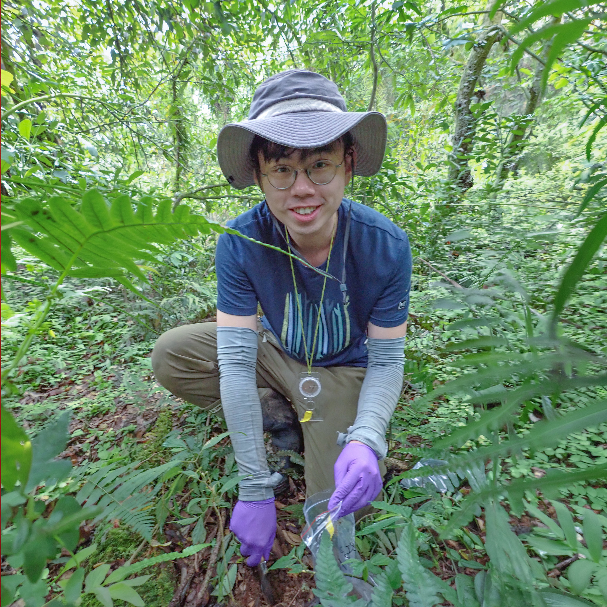

Tree-associated fungal communities
How strongly does an individual tree organize fungal communities in the soil around it, and how rapidly does that signal fade with distance?

Forest ecology · Soil fungi · Spatial ecology
I study how trees shape belowground fungal communities across space, and how these hidden ecological processes influence forest regeneration and community dynamics.
About
Do spatial patterns in soil microbes help explain why seedlings often establish away from adult trees? This question lies at the heart of my PhD research. Soil-borne pathogens near adult trees can reduce seedling survival, producing a widely documented distance-dependent pattern. But do belowground microbial communities change across space in ways that match this pattern? Can we define the spatial boundaries of plant-conditioned soil microbiomes? By addressing these questions, I hope to better understand how belowground processes shape forest regeneration and community structure.
Research
I study how tree-associated soil microbes vary across space, persist through time, and shape forest regeneration.
How strongly does an individual tree organize fungal communities in the soil around it, and how rapidly does that signal fade with distance?
How do living and dead trees differ in the microbial legacies they leave, and what do those legacies mean for later plant establishment?
How can spatial patterns across individual studies be quantified and combined to identify general ecological boundaries?
Contact
Ideas and conversations are always welcome.